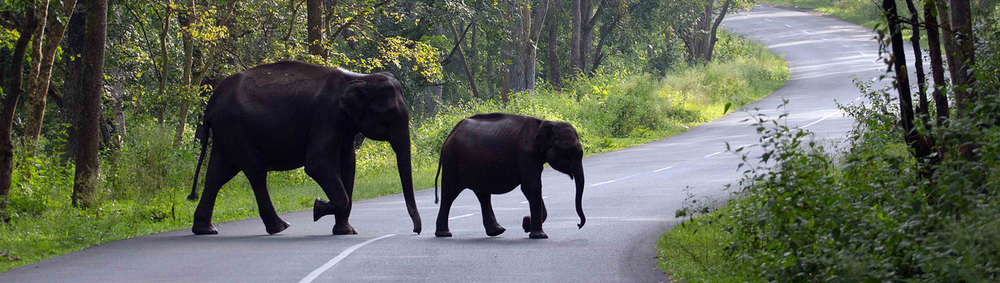

“It is better to see something once than to hear about it a thousand times.”

Second slide label

Wayanad, the green paradise is nestled among the mountains of the Western Ghats, forming the border world of the greener part of Kerala. Clean and pristine, enchanting and hypnotizing, this land is filled with history and culture. Located at a distance of 76 km. from wayanadthe sea shores of Kozhikode, this verdant hill station is full of plantations, forests and wildlife. Wayanad hills are contiguous to Mudumalai in Tamil Nadu and Bandhipur in Karnataka, thus forming a vast land mass for the wild life to move about in their most natural abode. Regarding geographical location, Wayanad district stands on the southern top of the Deccan plateau and its chief glory is the majestic Western Ghats with lofty ridges and rugged terrain interspersed with dense forest, tangled jungles and deep valleys. The place also enjoys a strategic location as the leading tourist centres of South India like Ooty, Mysore, Bangalore, Coorg and Kannur are situated around this region. Covering an area of 2132 km ², with a density of population at 369 people/km² within a population of 780,619 people (2001 census), Wayanad consists of 3 taluks - Mananthavady, Sulthan Bathery and Vythiri. The district headquarters is located at Kalpetta municipality with a population of 29,602 as per 2001 census.
The mist – capped mountains, valleys with green meadows, white water springs, blue water lakes and wild forests makes Wayanad in Kerala a perfect destination for recreational tourism.
Historically and culturally the importance of Wayanad lies very closely linked with its temples. Thirunelly temple, Jain temples at Sulthan Bahery and Panamaram and Valliyoorkav at Mananthavady historically date back from 12th to 16th centuries and the temples show that Wayanad was a habitat of mankind and place of civilization even in very old times. These temples are the living testimony of the cultural heritage of Wayanad.
The natural scenic beauty of Wayanad and its rich natural resources offer several opportunities for adventure tourism. The hills rocks and valley which make the very unique character of Wayanad provide a lot for catering to the ever increasing demand for adventure tourist.Trekking to the Chembra peak is one of the risky tourist endeavours. Chembra peak is the highest peak in Wayanad at 2100m. above mean sea level. It is14 kms. west of Kalpetta.
The natural scenic beauty of Wayanad and its rich natural resources offer several opportunities for adventure tourism. The hills rocks and valley which make the very unique character of Wayanad provide a lot for catering to the ever increasing demand for adventure tourist.Trekking to the Chembra peak is one of the risky tourist endeavours. Chembra peak is the highest peak in Wayanad at 2100m. above mean sea level. It is14 kms. west of Kalpetta.
Wayanad enjoys a salubrious climate throughout the year. The mean average rain fall in this district is 2322 m.m. Lakkidi, Vythiri and Meppadi are the high rainfall areas in Wayanad. Annual rain fall in these high rain fall areas ranges from 3,000 to 4,000m.m. High velocity winds are common during the south west monsoon and dry winds blow in March-April. High altitude regions experience severe cold. At Ambalavayal in Wayanad, the Tribes in wayanadmean maximum and minimum temperature for the last five years were 29oC and 18oC respectively. This place experiences a high relative humidity which goes even up to 95 percent during the south west monsoon period. Generally, the year is classifed into four seasons, namely, cold weather (December-February), hot weather (March-May), south west monsoon (June-September) and north east monsoon(October-November). The dale Lakkidi, nestled among the hills of Vythiri taluk, has the highest average rainfall in Kerala. The misty environs of Wayanad offer a wide range of trekking opportunities, plantation visits and wildlife tours.
It was at Mananthavady (35km N) that Lord Arthur Wellesley fought a guerilla war with the Pazhassi Raja and British supremacy marked the region for two centuries. When the state of Kerala was created in 1956; the southern region of Wayanad which was part of Cannannoor district was attached to Calicut district. In 1980 the Wayanad region was amalgamated out of the districts of Kannur and Kozhikode and comprised the three taluks of Mananthavady, Sultan Bathery and Vythiry. Kalpetta, the region's district headquarters (15 km N), used to be a major Jain centre. Elephant crossing roadLakkidi, its gateway town, is popular for its plantation homestays. Tipu Sultan, the legendary ruler of Mysore who valiantly opposed the British, built a fort at Sultan Bathery 10 km away, in the 18th century.
Established in 1973, the Wayanad Wildlife Sanctuary is contiguous to the protected area network of Nagarhole and Bandipur of Karnataka on the north-east and Mudimalai of Tamil Nadu on the south-east. Rich in bio-diversity, the sanctuary is an integral part of the Nilgiri Biosphere Reserve, Which has been established with the specific objective of conservating the biological heritage of the region. Consisting entirely of notified reserve, the sanctuary is very rich in fauna and flora. The management of the sanctuary lays emphasis on scientific conservation with due consideration to the general lifestyle of the tribals and others who live on the fringes of the forest.